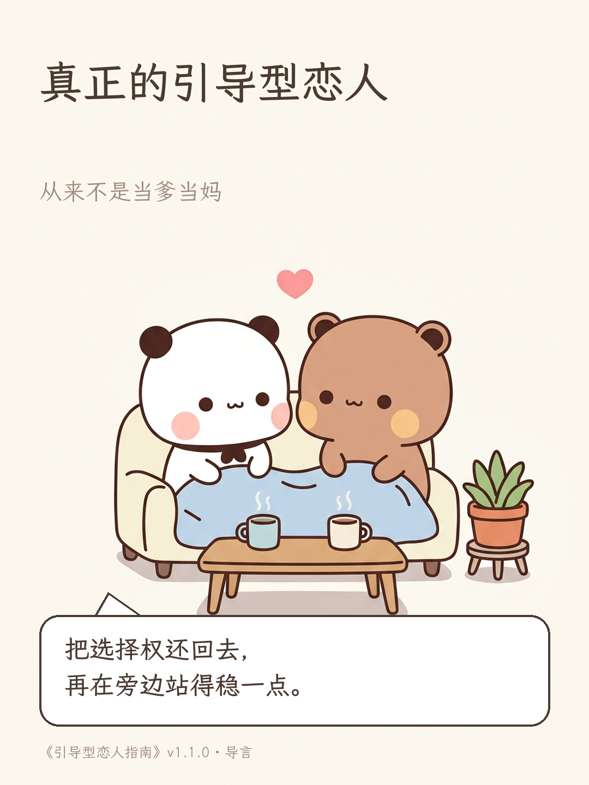
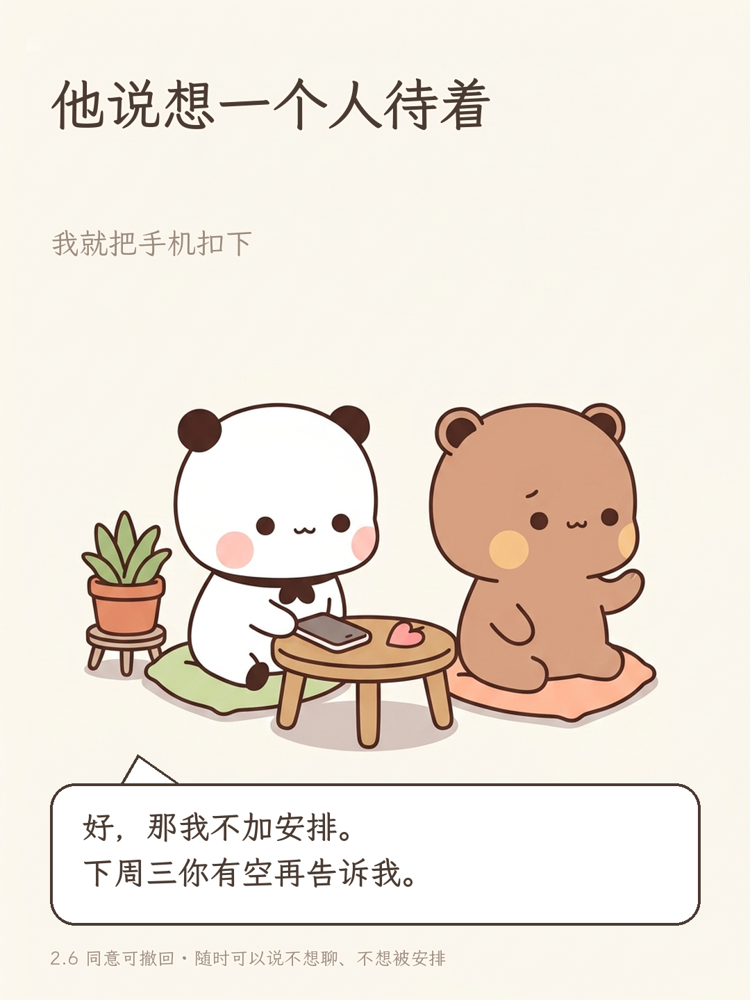
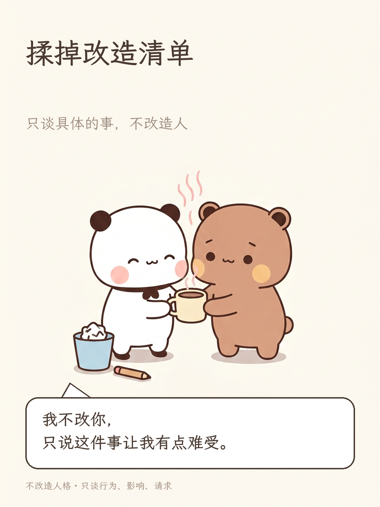
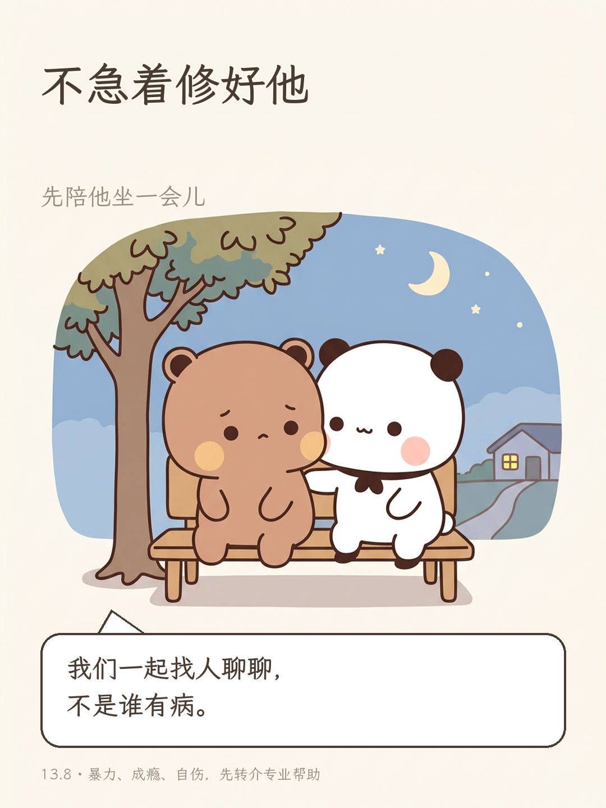
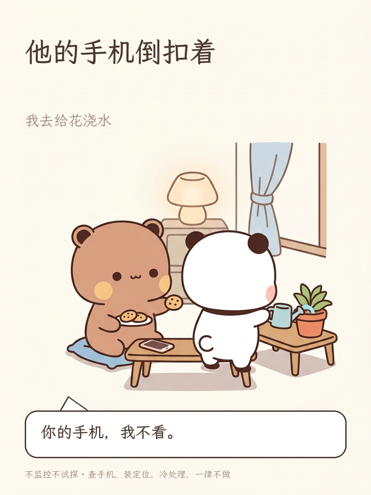
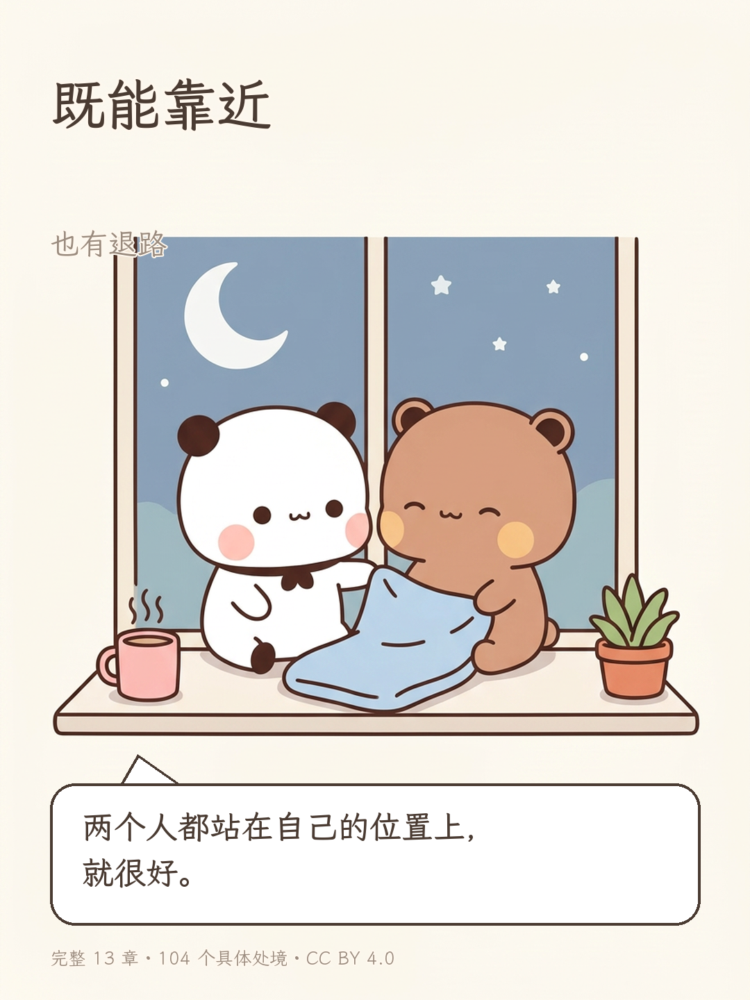

真正的引导型恋人
从来不是当爹当妈
把选择权还回去， 再在旁边站得稳一点。
《引导型恋人指南》v1.1.0 · 导言
他说想一个人待着
我就把手机扣下
好，那我不加安排。 下周三你有空再告诉我。
2.6 同意可撤回 · 随时可以说不想聊、不想被安排
揉掉改造清单
只谈具体的事，不改造人
我不改你， 只说这件事让我有点难受。
不改造人格 · 只谈行为、影响、请求
不急着修好他
先陪他坐一会儿
我们一起找人聊聊， 不是谁有病。
13.8 · 暴力、成瘾、自伤，先转介专业帮助
他的手机倒扣着
我去给花浇水
你的手机，我不看。
不监控不试探 · 查手机、装定位、冷处理，一律不做
既能靠近
也有退路
两个人都站在自己的位置上， 就很好。
完整 13 章 · 104 个具体处境 · CC BY 4.0